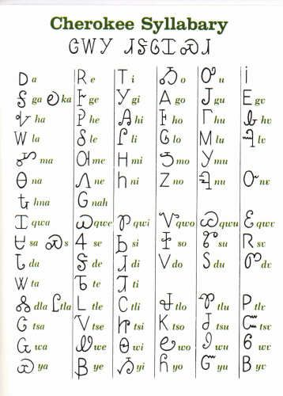

Cherokee Writing System
(Gohiyidi Dohiyi – "Writing Peace")

How to Recognize It?
Distinctive Features of Cherokee Syllabary
- Syllabic System: Each Cherokee character represents a complete syllable, not just a single sound.
- Visual Resemblance: Many characters resemble Latin, Greek, or uppercase Roman letters, but represent different sounds.
- Consistent Height: Characters generally have uniform height, unlike some writing systems with varying character heights.
- No Cursive Form: Characters are written separately and do not connect to each other.
- Geometric Shapes: Many characters are composed of simple geometric elements like straight lines and curves.
- 85 Characters: The complete syllabary consists of 85 characters representing all Cherokee syllables.
Writing Basics
The Cherokee syllabary is a writing system where each character represents a syllable in the Cherokee language. Unlike alphabets where characters represent individual sounds, Cherokee characters combine consonants and vowels into single units.
The Cherokee syllabary was designed to be simple and practical, allowing anyone in the tribe to learn to read and write in a short period of time.
Basic Principles
- Written left to right, top to bottom
- Each character represents a full syllable
- Organized by six vowel sounds: a, e, i, o, u, v (nasal)
- No uppercase/lowercase distinction
- Punctuation borrowed from English
- Numbers are written using Arabic numerals

History
Origins and Evolution
The Cherokee syllabary was invented by Sequoyah (also known as George Guess), a Cherokee silversmith in the early 19th century. This remarkable achievement made him the only known person in history to create a writing system for a language single-handedly without already knowing how to read or write.
Timeline of Development
- 1809: Sequoyah begins work on creating a writing system for Cherokee
- 1821: After 12 years of work, Sequoyah completes the syllabary
- 1821-1823: The syllabary spreads rapidly through Cherokee communities
- 1825: The syllabary is officially adopted by the Cherokee Nation
- 1828: First issue of the Cherokee Phoenix newspaper is published using the syllabary
- 1830s: Literacy rates among Cherokee surpass those of surrounding European-American settlers
- 2000s: Digital technology introduces Cherokee fonts and keyboards, helping preserve the writing system
Fun Facts
- The Cherokee syllabary went from invention to widespread literacy in less than a generation.
- Sequoyah initially faced skepticism and was accused of practicing witchcraft when developing the writing system.
- The syllabary contains 85 characters, far fewer than the number of Chinese characters but more than Latin alphabets.
- Apple was the first major technology company to integrate Cherokee language support in iOS and macOS.
- The Cherokee Nation actively preserves the syllabary through immersion schools and language programs.
- Sequoyah's original syllabary included 200 characters, but was eventually reduced to 85 for efficiency.